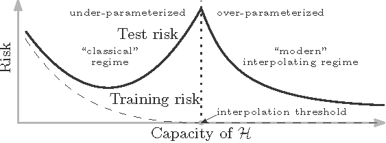

Stat 435 Lecture Notes 4a
Xiongzhi Chen
Washington State University

Model assessment
Model and estimate
- Model: \(Y=\beta_0+\beta_1 X_1 + \beta_2 X_2 + \ldots + \beta_p X_p + \varepsilon\)
- Observations: \(\mathbf{z}_i=(y_i,x_{i1},x_{i2},\ldots,x_{ip}),i=1,\ldots,n\), where \(y_i\) is the \(i\)th observation for \(Y\) and \(x_{ij}\) that for \(X_j\)
- Estimate \(\hat{\boldsymbol{\beta}}=(\hat{\beta}_0,\hat{\beta}_1,\ldots,\hat{\beta}_p)\) of \({\boldsymbol{\beta}}=({\beta}_0,{\beta}_1,\ldots,{\beta}_p)\)
- Fitted model: \(\hat{y}_i=\hat{\beta}_0+\hat{\beta}_1 x_{i1} + \hat{\beta}_2 x_{i2} + \ldots + \hat{\beta}_p x_{ip}\)
- Residuals: \(e_i=y_i - \hat{y}_i\)
Note: there are many ways to obtain an estimate \(\hat{\boldsymbol{\beta}}\) of \({\boldsymbol{\beta}}\)
Training error
Training error is a measure on the performance of a model when it is fitted/trained from a set of observations that we call the training set. Namely, training error measures how well a fitted/trained model fits/learns the training set.
A commonly used training error is the residual sum of squares (RSS) (though other choices are available)
For example, if we take the set of \(n\) observations as the training set and use RSS as the training error, then the least squares estimate (LSE) minimizes \(\textrm{RSS}=\sum_{i=1}^m e_i^2\)
Test error
- Test error is a measure on the predictive performance of a (fitted/trained) model when it is used to predict the responses of new observations on the predictors \(\tilde{X}=(X_1,\ldots,X_p)\) that are not in the training set (that is used to fit/train the model). Namely, test error measures how well a fitted/trained model predicts responses for observations that are not part of a training set.
- For example, given a new observation \(\mathbf{x}_0=(x_{01},x_{02},\ldots,x_{0p})\) for \(\tilde{X}\), let \(y_0\) be the predicted response given by the fitted/trained model. Then we can use \(E(y_0 -\hat{y}_0)^2\) as the test error.
Note: other measures of test error are available
Training error and test error
- Training error measures how well a fitted/trained model fits/learns the seen observations (of the training set), whereas test error measures how well this model predicts unseen responses based on unseen observations on predictors
- Test error is alway unknown and needs to be estimated
- A model that has good predictive performance is referred to as having good “generalization performance” or “generalizes well”
- A model that fits the training set very well or perfectly is often referred to as “overfitting” or “overfits”
Training error and test error
- Classic wisdom: it is believed that an overfitting model that fits the training set very well or perfectly (i.e., with very small training error) cannot generalize well (i.e., cannot have small testing error)
- Modern wisdom: when there are relatively few parameters in the model, the classic wisdom is sensible. However, beyond a critical setting, an overfitting model (with many parameters) can have very good generalization performance.
Note: Modern wisdom, dubbed as the “double descent curve”, was discovered by Dr. Belkin and his coauthors
Double descent curve

Image credit: Belkin et al; doi.org/10.1073/pnas.1903070116
Cross-validation
Overview
Cross-validation is a resampling technique to estimate test error, and is often implemented as follows:
- Randomly divides a set of observations into a training set and validation set
- Use the training set to fit a model (that optimizes some training error), and apply the fitted model to predict the responses for the observations in the validation set to obtain an estimate of the test error of the model
- Do the above independently for different random splits, and estimate test error from the estimates of test error
Pictorial description
CV: estimate test error
With \(n\) observations \(\mathbf{z}_i = (y_i,\mathbf{x}_i)\),
Randomly split the \(n\) observations into a training set \(\mathcal{T}_1\) with \(n_1\) observations, and a validation set \(\mathcal{V}_1\) with \(n_2=n-n_1\) observations
Fit model \(M_l\) using \(\mathcal{T}\), apply fitted model \(\hat{M}_l\) to predict responses in \(\mathcal{V}_1\), and compute the mean squared error (MSE) \[\textrm{MSE}(\mathcal{V}_1)=n_2^{-1} \sum_{y_i \in \mathcal{V}_1} (y_i -\hat{y}_i)^2,\] where \(\hat{y}_i\) is the fitted value for \(y_i\)
Note: \(\mathcal{T}_1\) and \(\mathcal{V}_1\) are disjoint
CV: estimate test error
- Repeat the above “splitting-training-validating” steps independently \(k\) times for model \(M_l\) to obtain \(k\) MSE’s \(\textrm{MSE}(\mathcal{V}_j),j=1,\ldots,k\), and estimate the test mean squared error (MSE) of model \(M_l\) by \[\textrm{CV}(M_l)=k^{-1} \sum_{j=1}^k \textrm{MSE}(\mathcal{V}_j)\]
Note: the above steps give an estimate of test error of model \(M_l\)
CV: model selection
- Obtain via cross-validation the estimated test error for each model \(M_l,l=1,\ldots,L\)
- Pick the model that has the smallest estimated test MSE, i.e., pick the optimal model \(M^{\ast}\) such that \[\textrm{CV}(M^*)=\min_{1\le l \le L}\textrm{CV}(M_l)\]
Note: the above gives the best model among a set of models
Illustration
\(k\)-fold cross-validation
The \(k\)-fold CV for model \(M_l\) is implemented as follows:
- Randomly splits the data set into \(k\) groups, or “folds”, of approximately equal sizes
- Pick a fold, say, folder \(j\), as the validation set (i.e., the “held-out” fold), fit the model on the remaining \(k-1\) folds, and compute the mean squared error, \(\textrm{MSE}_{j}\), on the observations in the held-out fold
- Do the above for all \(j,j=1,\ldots,k\), and estimate the test MSE of the model by \[ \textrm{CV}({M_l})=\frac{1}{k}\sum_{j=1}^{k}\textrm{MSE}_{j} \]
Variable and model selection
Motivation
Settings:
Model: \(Y=\beta_0+\beta_1 X_1 + \beta_2 X_2 + \ldots + \beta_p X_p + \varepsilon\)
Observations: \((y_i,x_{i1},x_{i2},\ldots,x_{ip}),i=1,\ldots,n\), where \(y_i\) is the \(i\)th observation for \(Y\) and \(x_{ij}\) that for \(X_j\)
Estimate \(\hat{\boldsymbol{\beta}}=(\hat{\beta}_0,\hat{\beta}_1,\ldots,\hat{\beta}_p)\) of \({\boldsymbol{\beta}}=({\beta}_0,{\beta}_1,\ldots,{\beta}_p)\)
How to obtain an estimate \(\hat{\boldsymbol{\beta}}\) of \({\boldsymbol{\beta}}\) depends critically on
- the relative magnitudes of \(p+1\) and \(n\)
- what properties we want \(\hat{\boldsymbol{\beta}}\) to have
Classic scenario: \(p+1 \le n\)
When the number of parameters is not larger than the sample size:
- The least squares estimate (LSE) is uniquely defined
- The LSE is unbiased, i.e., \(E(\hat{\boldsymbol{\beta}})={\boldsymbol{\beta}}\), when \(E(\varepsilon)=0\)
- The LSE is optimal in some sense (e.g., Gauss-Markov theorem, meaning that the LSE has the smallest variance among all linear unbiased estimators, if the random errors are uncorrelated and have equal variances and zero expectation)
Classic scenario: \(p+1 \le n\)
When the number of parameters is not larger than the sample size but there are many potential predictors, we often desire a small model that is easy to interpret and perform well. Namely, we still need to consider:
- Which predictors are the most relevant to the response
- how to build a small model using a few predictors that can well predict the response
Variable or model selection is needed in the classic scenario when there are many potential predictors.
Modern scenario: \(p+1 > n\)
When the number of parameters is bigger than the sample size,
- The LSE is not uniquely defined, i.e., there are infinitely many models that minimizes the residual sum of squares
- An LSE is biased in general, i.e., \(E(\hat{\boldsymbol{\beta}}) \ne {\boldsymbol{\beta}}\), even when \(E(\varepsilon)=0\)
- An LSE has infinite variance (and Gauss-Markov theorem does not hold for LSE)
Modern scenario: \(p+1 > n\)
In this scenario, we have a few choices:
- perform variable/model selection: select a few most relevant predictors to form a model and then apply LSE to estimate the model parameters
- employ different estimation methods: use a different method (such as shrinkage) than LSE to estimate coefficients of predictors in a model (as a bias-variance trade-off)
- use dimension reduction: projecting all predictors onto a smaller subspace and use transformed predictors to build a model
Best subset selection
Overview
Consider a linear model with \(p\) predictors: \[ Y=\beta_0+\beta_1 X_1 + \beta_2 X_2 + \ldots + \beta_p X_p + \varepsilon \]
Best subset selection is a “brute-force” method that checks each of the \(2^p\) possible linear submodels and picks the best one under some criterion
Best subset selection indeed gives the best subset of predictors (in terms of linear model) among all \(p\) predictors under a criterion
Criteria for subset selection
Some criteria for subset/variable selection:
- Mallow’s \(C_p\)
- AIC (i.e., Akaike information criterion),
- BIC (i.e., Bayesian information criterion)
- Adjusted \(R^2\)
- Cross-validated prediction error
Implementation
Illustration
Forward/backwards stepwise selection
Overview
Forward stepwise selection
- only fits \[1+\sum_{k=0}^{p-1}\left(p-k\right)=1+2^{-1}p\left(p+1\right)\] linear submodels out of a total of \(2^p\) linear submodels
- is not guaranteed to find the best model among all linear submodels
- has much smaller computational intensity than best subset selection
Implementation
Illustration
Backwards stepwise selection
Choosing the optimal model
General principle
For best subset, forward stepwise, and backwards stepwise selections, we need to select a best model from the best submodels. However, neither training set RSS nor training set \(R^{2}\) can be used for this purpose since
- neither ensures good predictive performance in terms of test error of the resultant model
- either tends to pick a model that has the largest possible size in terms of the number of parameters
So, a practical way to select a single best model is to balance the RSS on the training error and the model size
Four methods
Four methods to choose the optimal model:
- Mallow’s \(C_p\)
- Akaike information criterion
- Bayesian information criterion
- Cross-validation
Mallow’s \(C_p\)
Mallow’s
\[\begin{equation} C_{p}=\frac{1}{n}\left( \textrm{RSS}+2d\hat{\sigma}^{2}\right) \end{equation}\]- \(d\) is the number of predictors in the model
- Typically \(\hat{\sigma}^{2}\), an estimate of \(\sigma^2=\textrm{Var}(\varepsilon)\), is estimated using the full model containing all predictors
Remark: If \(\hat{\sigma}^{2}\) is an unbiased estimate of \(\sigma^{2}\), then \(C_{p}\) is an unbiased estimate of test MSE
Akaike information criterion
- The Akaike information criterion (AIC) is mainly used together with the maximum likelihood method
- For a linear model with Gaussian errors, the maximum likelihood estimate (MLE) is the same as the least squares estimate (LSE). In this case, AIC is, up to an additive constant, given by \[ \textrm{AIC}=\frac{1}{n\hat{\sigma}^{2}}\left( \textrm{RSS}+2d\hat{\sigma}^{2}\right) \]
Bayesian information criterion
- The Bayesian information criterion (BIC) is derived from a Bayesian perspective
- For the least squares model with \(d\) parameters, the BIC is, up to irrelevant constants, given by \[ \textrm{BIC}=\frac{1}{n\hat{\sigma}^{2}}\left( \textrm{RSS}+d\hat{\sigma}^{2}\log n\right) \]
- BIC generally places a heavier penalty on models with many variables. For large \(n\), BIC is bigger than \(C_{p}\)
Adjusted \(R^{2}\)
- The adjusted \(R^{2}\) is given by \[ \text{Adjusted }R^{2}=1-\frac{\textrm{RSS}/\left( n-d-1\right) }{\textrm{TSS}/\left(n-1\right) } \]
- Unlike \(C_{p}\), AIC and BIC, for which a small value indicates a model with a low test error, a large value of adjusted \(R^{2}\) indicates a model with a low test error
The intuition behind the adjusted \(R^{2}\) is that “once all of the correct variables have been included in the model, adding additional noise variables will lead to a very small decrease in RSS”
Recap
Let \(d\) be number of predictors in model, \(n\) sample size, and \(\hat{\sigma}^{2}\) an estimate of \(\sigma^2=\textrm{Var}(\varepsilon)\):
\(C_{p}=\frac{1}{n}\left( \textrm{RSS}+2d\hat{\sigma}^{2}\right)\)
\(\textrm{AIC}=\frac{1}{n\hat{\sigma}^{2}}\left( RSS+2d\hat{\sigma}^{2}\right)\)
\(\textrm{BIC}=\frac{1}{n\hat{\sigma}^{2}}\left( \textrm{RSS}+d\hat{\sigma}^{2}\log n\right)\)
\(\text{Adjusted }R^{2}=1-\frac{\textrm{RSS}/\left( n-d-1\right) }{\textrm{TSS}/\left(n-1\right) }\)
All formulae for \(C_{p}\), AIC and BIC are for a linear model fit using least squares; \(C_p\), AIC and BIC all have good theoretical justifications
Illustration
\(k\)-fold cross-validation
Recall CV for model selection:
- Obtain via cross-validation the estimated test error for each model \(M_l,l=1,\ldots,L\)
- Pick the model that has the smallest estimated test MSE, i.e., pick the optimal model \(M^{\ast}\) such that \[\textrm{CV}(M^*)=\min_{1\le l \le L}\textrm{CV}(M_l)\]
\(k\)-fold cross-validation
The \(k\)-fold CV for model \(M_l\) is implemented as follows:
- Randomly splits the data set into \(k\) groups, or “folds”, of approximately equal sizes
- Pick a fold, say, folder \(j\), as the validation set (i.e., the “held-out” fold), fit the model on the remaining \(k-1\) folds, and compute the mean squared error, \(\textrm{MSE}_{j}\), on the observations in the held-out fold
- Do the above for all \(j,j=1,\ldots,k\), and estimate the test MSE of the model by \[ \textrm{CV}({M_l})=\frac{1}{k}\sum_{j=1}^{k}\textrm{MSE}_{j} \]
\(k\)-fold cross-validation
Guideline:
- Usually \(k=5\) or \(10\) is chosen, as these values have been shown empirically to yield test error rate estimates that suffer neither from excessively high bias nor from very high variance
\(k\)-fold cross-validation
One-standard-error rule
Different random splitting schemes often lead to differential optimal models. So,
first, we can calculate the standard error of the estimated test MSE for each model size, by repeatedly validating ``the best model’’ of this model size
then select the smallest model for which the estimated test error is within one standard error of the lowest point on the front curve for the estimated MSEs of ``the best models’’
License and session Information
> sessionInfo()
R version 3.5.0 (2018-04-23)
Platform: x86_64-w64-mingw32/x64 (64-bit)
Running under: Windows 10 x64 (build 19043)
Matrix products: default
locale:
[1] LC_COLLATE=English_United States.1252
[2] LC_CTYPE=English_United States.1252
[3] LC_MONETARY=English_United States.1252
[4] LC_NUMERIC=C
[5] LC_TIME=English_United States.1252
attached base packages:
[1] stats graphics grDevices utils datasets methods
[7] base
other attached packages:
[1] knitr_1.21
loaded via a namespace (and not attached):
[1] compiler_3.5.0 magrittr_1.5 tools_3.5.0
[4] htmltools_0.3.6 revealjs_0.9 yaml_2.2.0
[7] Rcpp_1.0.3 stringi_1.2.4 rmarkdown_1.11
[10] stringr_1.3.1 xfun_0.4 digest_0.6.18
[13] evaluate_0.12